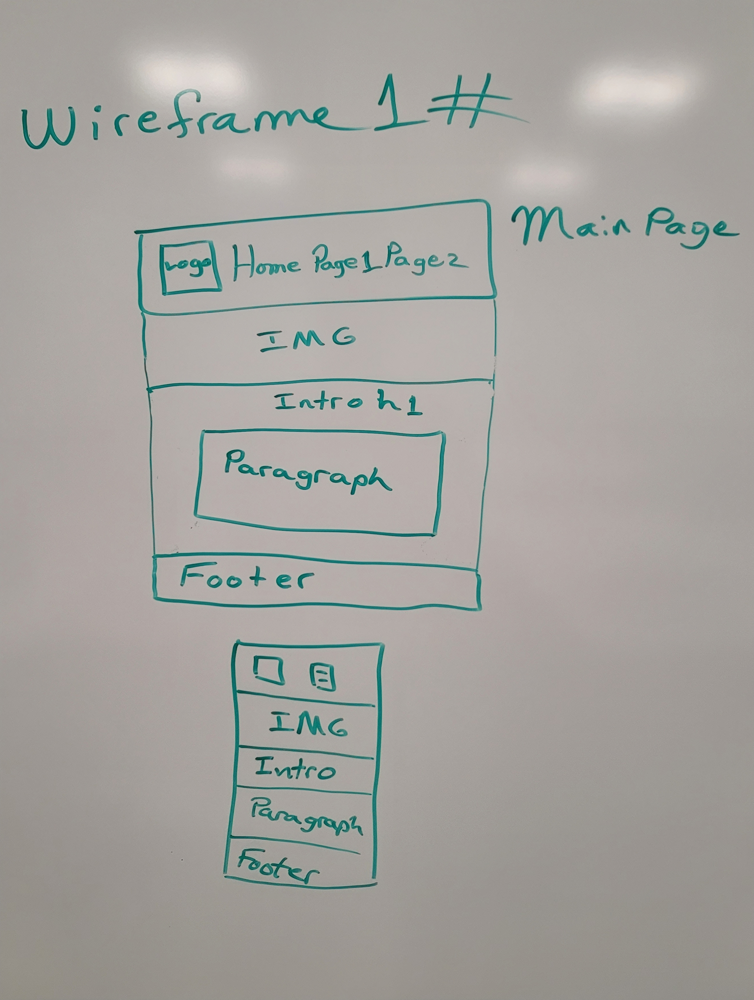
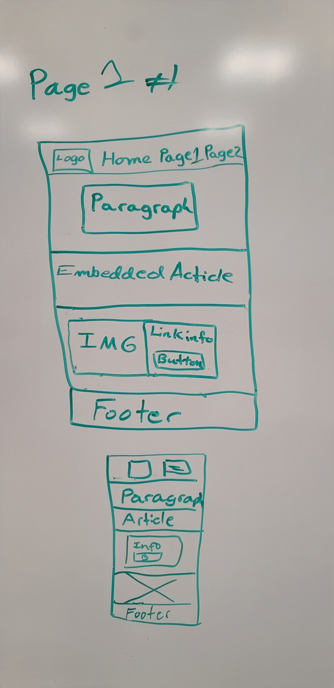
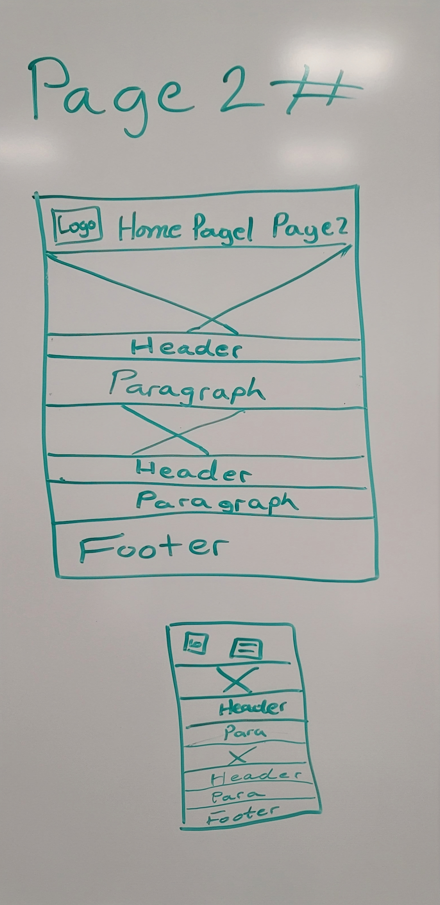

Overview
Purpose
This is an all you need to know Cyber Security website. Looking to stay updated on most recent Cyber Security updates and knews articles. If you have any questions here we have your answers. This website is perfect for beginners to the Cyber Security field to stay updated and be prepared
Audience
Anyone who is searching for information about Cyber Security either professional, beginner, or just those with a hobby.
Branding
Website Logo
Style Guide
Color Palette
Palette URL:
https://coolors.co/396e94-e7c24f-a43312-381d2a-aabd8c| Primary | Secondary | Accent 1 | Accent 2 |
|---|---|---|---|
| #0c94fc | #fdfdfdfa | #89073bd2 | rgb(94, 95, 96) |
Typography
Heading Font: Anta Static
Paragraph Font: Kode Mono
Normal paragraph example
The best website on everything Cyber Security. Based out of Idaho we have made this website to be an easy to use tool. We are here to help eveyone explore Cyber Security! We keep our users updated on the knewest news on Cyber Security principles, standards, and most recent malwares. This website will update continually to keep our users informed.
Colored paragraph example
Staying informed about the Cyber world will keep any business safe from malicious attacks. Keep your Cyber Security professionals updated and well informed to keep your assets safe! Do you know how many businesses lose money, assets, and information due to malicious attacks due to improper cyber protection. In this cyber encrazed world you must be on top of security!
Navigation
Site Map
Wireframes
Home

Introduction to Cyber Security
In today's interconnected world, cyber security plays a vital role in safeguarding our digital assets and protecting against a myriad of threats. Cyber security encompasses the practices, technologies, and processes designed to defend computers, networks, and data from unauthorized access, theft, and damage. As our reliance on technology continues to grow, so too do the risks associated with cyber threats. From malicious hackers seeking to exploit vulnerabilities for financial gain to sophisticated cyber espionage operations targeting sensitive information, the digital landscape is rife with potential dangers. Understanding the fundamentals of cyber security is essential for individuals, businesses, and governments alike. This includes recognizing common threats such as malware, phishing, and ransomware, understanding vulnerabilities in software and systems, and implementing effective countermeasures to mitigate risks. By promoting awareness and adherence to cyber security best practices, we can collectively work towards building a safer and more resilient digital ecosystem. In this introduction to cyber security, we will explore key concepts such as threats, vulnerabilities, and countermeasures, providing readers with a solid foundation to navigate the complexities of the cyber security landscape.
Images for the Home page

[Page 2]
Common cyber threats and attacks pose significant risks to individuals, organizations, and nations in today's digital landscape. Malicious actors continuously exploit vulnerabilities in technology and human behavior to compromise systems, steal sensitive information, and disrupt operations. Among the most prevalent threats are malware, including viruses, worms, and Trojans, which can infiltrate systems to steal data, disrupt operations, or extort money through ransomware attacks. Phishing attacks, on the other hand, employ deceptive tactics such as fraudulent emails or websites to trick users into disclosing sensitive information or downloading malicious software. Additionally, distributed denial-of-service (DDoS) attacks target websites and online services by overwhelming them with a flood of traffic, rendering them inaccessible to legitimate users. Other notable threats include insider threats, where trusted individuals abuse their access privileges to steal data or sabotage systems, and advanced persistent threats (APTs), sophisticated attacks typically orchestrated by nation-states or organized cybercriminal groups with specific objectives such as espionage or sabotage. Understanding these common cyber threats and attacks is essential for implementing effective security measures and mitigating risks in today's interconnected digital world.
Images for the Page 2
[Page 3]
Data privacy and protection are paramount in the digital age, where vast amounts of personal and sensitive information are stored, transmitted, and processed online. With the proliferation of digital devices and online services, individuals and organizations are increasingly vulnerable to data breaches, identity theft, and unauthorized access to confidential information. Data privacy refers to the right of individuals to control how their personal information is collected, used, and shared by others. It encompasses measures to ensure that personal data is handled responsibly and ethically, respecting the privacy preferences of individuals and complying with applicable laws and regulations. Data protection, on the other hand, involves safeguarding data against unauthorized access, disclosure, alteration, or destruction. This includes implementing technical, organizational, and procedural measures to prevent data breaches and mitigate risks to data security. Key principles of data protection include confidentiality, integrity, and availability, ensuring that data is kept secure, accurate, and accessible only to authorized parties. Effective data privacy and protection practices are essential for building trust and maintaining the confidentiality and integrity of personal and sensitive information. By prioritizing data privacy and protection, organizations can enhance customer trust, mitigate legal and regulatory risks, and safeguard their reputation in an increasingly data-driven world. It is incumbent upon individuals, businesses, and governments to take proactive steps to protect data privacy and ensure the responsible handling of personal information in today's interconnected digital ecosystem.
Images for the Page 3


Wireframes
Create three wireframes for your site. One for each page and list them here
Home
I want to make a hamburger menu for the mobile view wireframe. I want to make each page mobile friendly.
[Page 2]
I want to just make each page set up a little different showing I can do more that one style. Plus hamburger menu.
[Page 3]
hamburger menu set for mobile view
